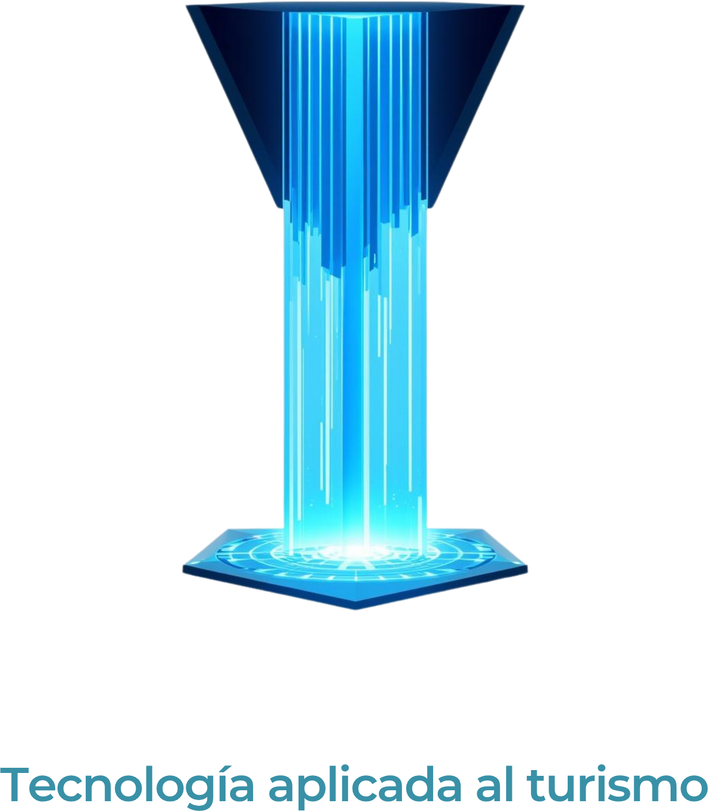
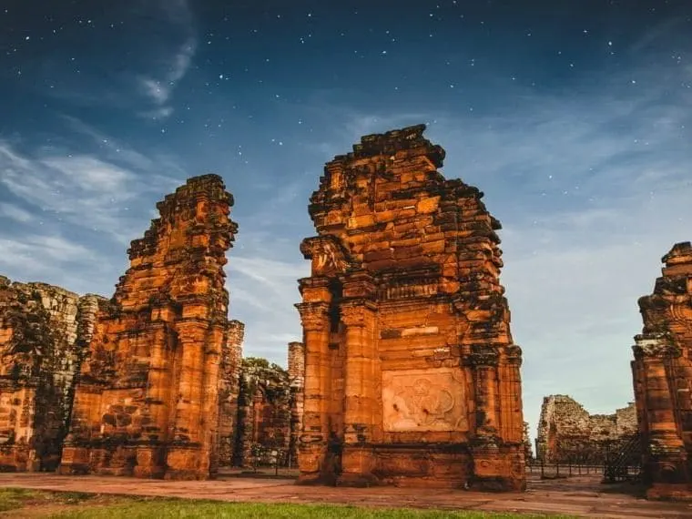
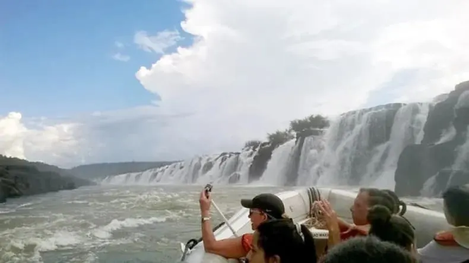
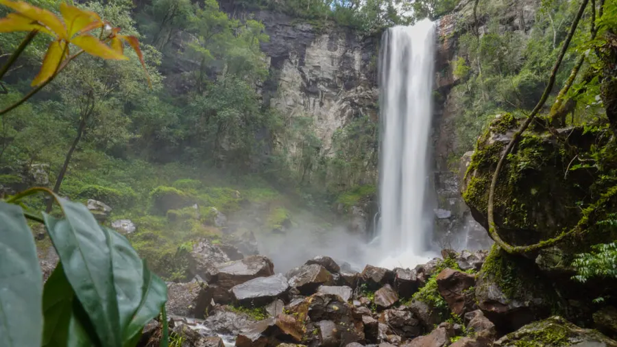
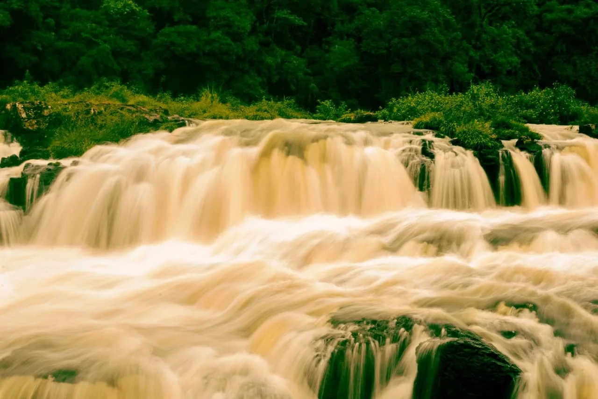

Municipalidad de
Jardín América
📍 Oficina de Turismo
Jardín América, Misiones
📲 Seguinos en redes
Escaneá para visitar
nuestro sitio web

Desarrollado por Selva.tic
Todos los derechos reservados
¿Qué visitar
desde aquí?
Jardín América: punto de partida ideal para recorrer las maravillas de Misiones.
Cataratas del Iguazú
Una de las Siete Maravillas Naturales del Mundo y Patrimonio UNESCO. El espectáculo más imponente de la Argentina.

30 km · ~30 minReducciones de San Ignacio Miní
Sitio arqueológico jesuítico Patrimonio UNESCO. A 30 km, perfecto para una tarde. Espectáculo de luz y sonido imperdible.

~200 km · ~3 hsSaltos del Moconá
Fenómeno único en el mundo: cascadas longitudinales de 12 km sobre el Río Uruguay en plena selva misionera.

45 km · ~45 minSalto Encantado & Parque de la Cruz
64 metros de caída libre entre paredes de basalto. Junto al Parque Temático de la Cruz, una excursión completa.

Descubrí
Jardín
América
Misiones · Argentina · Ruta Nacional 12